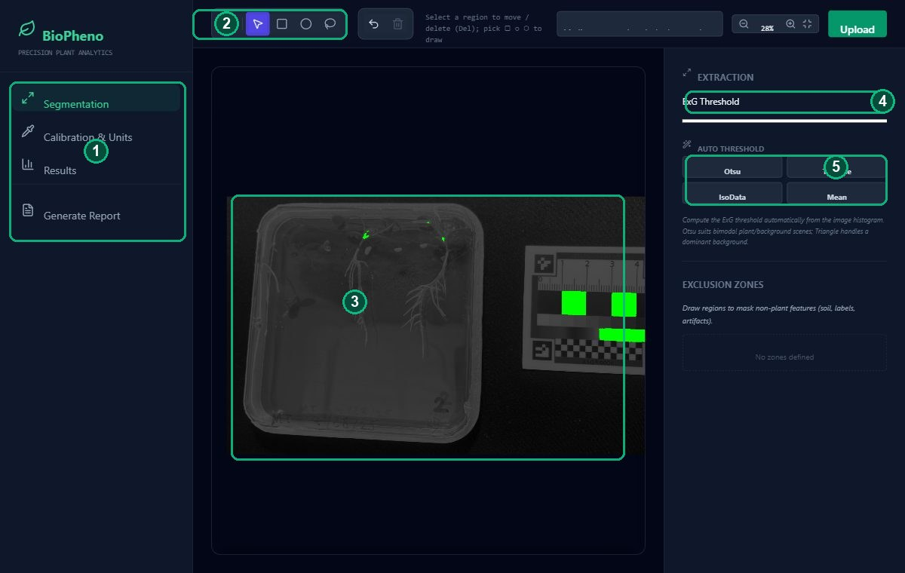
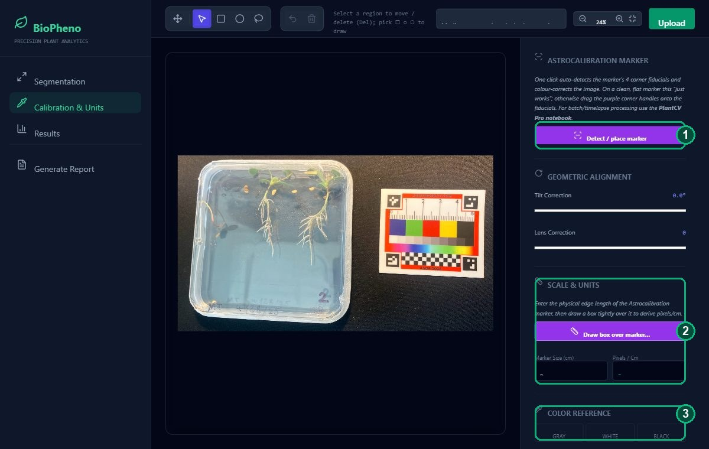
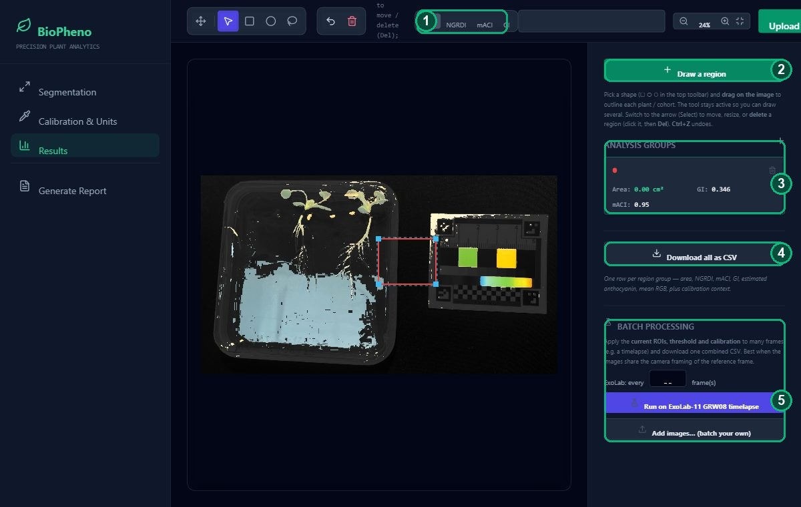

Getting started
Open the tool — it loads with a demo image (a Medicago ground-control plate with an Astrocalibration marker). Use the tabs on the left to move through the workflow: Segmentation → Calibration & Units → Results → Generate Report. To analyse your own photo, click Upload (top-right). For best results, photograph the plant flat and well-lit with the Astrocalibration marker in the same frame.
Segment the plant
The Segmentation tab isolates vegetation from the background using the Excess-Green index (ExG = 2G − R − B). Green pixels above the threshold are counted as plant.

- Workflow tabs — step through Segmentation → Calibration → Results. Generate Report builds a printable page.
- Tool bar — pan (hand), select (arrow), and the rectangle / ellipse / lasso shape tools, plus undo & delete.
- Canvas — your image with the live green segmentation overlay. Scroll to zoom, drag with the hand to pan.
- ExG Threshold — drag to tune what counts as plant. Lower = more pixels included.
- Auto threshold — one click computes the threshold from the image histogram: Otsu (best general choice), Triangle (dominant background), IsoData, Mean.
Calibrate colour & scale
The Calibration & Units tab colour-corrects the image against the marker and sets the pixels-per-cm scale so areas come out in cm².

- Detect / place marker — one click finds the marker's four corner fiducials and computes an affine colour correction to the Astro standard. On a clean, flat marker this "just works" (residual ≈ 0.12); otherwise drag the four purple corner handles onto the fiducials — put the top-left handle on the ASTROBOTANY / plus corner — until the pink chip-dots sit on the colour patches. Tick Apply colour correction.
- Scale & Units — enter the marker's physical edge length, click Draw box over marker, and drag a box across it to get pixels/cm (so area reports in cm²). Tilt & Lens sliders correct rotation/distortion.
- Colour Reference (manual fallback) — sample grey / white / black patches to white-balance if you're not using the full marker correction.
Draw regions of interest
On the Results tab, outline each plant or cohort so its statistics are measured separately.

- Visualization modes — view the plant as RGB or as an NGRDI / mACI / GI heat-map.
- Draw a region — click it (or pick ▢ ○ ⬡ in the toolbar) and drag on the image to outline a plant. The tool stays active so you can draw several; each group can hold several shapes. Use + to start a new group.
- Analysis Groups — live per-group stats: projected area (cm²), NGRDI, mACI, Green Index. Rename a group by typing its name; the trash icon deletes it. Select a region and press Del to remove it, Ctrl+Z to undo.
- Download all as CSV — one row per region group (area, NGRDI, mACI, GI, estimated anthocyanin, mean RGB, plus calibration context). Opens cleanly in Excel.
- Batch processing — apply the current ROIs, threshold and calibration to many frames and get one combined CSV: click Run on ExoLab-11 GRW08 timelapse (set how many frames to skip with the stride box), or Add images… to batch your own. Best when the frames share the reference image's camera framing.
Automate in Python (PlantCV Pro)
For fully-automatic, reproducible batch runs, the companion
PlantCV Pro notebook
does marker detection → affine_color_correction → segmentation → indices → CSV in Python/OpenCV,
sharing the same 15-chip standard and index definitions as this tool. Open it in Google Colab, point it at your
images, and run.
Keyboard shortcuts & indices
| V | Select / move / resize |
| R C L | Rectangle / ellipse / lasso |
| H | Pan the image |
| Del / ⌫ | Delete the selected region |
| Ctrl+Z | Undo |
| Esc | Back to Select & deselect |
- ExG = 2G − R − B
- Excess-Green — separates plant from background.
- NGRDI = (G−R)/(G+R)
- Greenness / canopy vigour proxy.
- mACI = R / G
- Modified anthocyanin content index (higher = more red/anthocyanin).
- GI = G / (R+G+B)
- Green fraction.